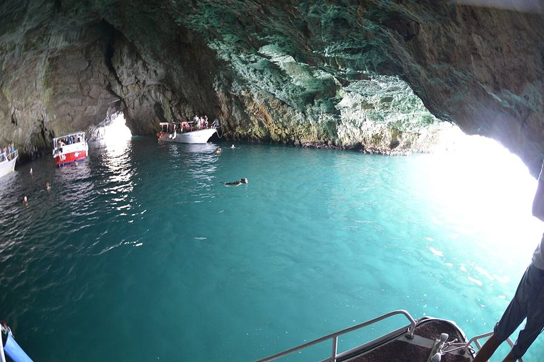

Luštica Peninsula Guide 2026: Blue Cave, Beaches, Olive Farms & Playworking
Luštica is a wedge of land between the Bay of Kotor and the open Adriatic. Stone villages with cypress trees, 300-year-old olive groves, hidden coves, Austro-Hungarian forts on the hilltops, and — newer — the polished Luštica Bay resort village with its marina and the Chedi hotel. Once a Yugoslav military zone, now one of the quietest parts of the Montenegrin coast and increasingly the place digital nomads head when they want sea, work and slow.

Where exactly is Luštica?
Luštica peninsula closes the south side of the Bay of Kotor, between the Tivat bay and the open Adriatic. Roughly 16 km long, 4 km wide at the widest, 20 small villages, two main roads, no traffic lights. Tivat Airport is a 15-minute drive from central Luštica. Kotor is 25 minutes by road or boat. The whole peninsula was a closed Yugoslav naval area until the early 2000s, which is why it still feels noticeably less developed than the bay's other shores.
The Luštica villages — which to visit
- Đuraševići — central, where Playworking is. A working village with a stone church, a small shop, and the road that links the whole peninsula.
- Krašići — on the bay side, walkable from Tivat via the Pine promenade. Small marina, swimming spots, a few konobas.
- Radovići — bay-side, near Plavi Horizonti beach. A quiet base with apartments and family-run restaurants.
- Rose — fishing village at the western tip. Small church, narrow stone alleys, fish tavernas right on the water. The most cinematic of the Luštica villages. 25 min by car from Đuraševići, or 15 min by boat from Herceg Novi.
- Bogišići, Klinci, Tići — inland Luštica villages with olive groves and walking trails. A different rhythm — almost no tourism here.
- Luštica Bay — the new master-planned resort village. Marina, Piazza Centrale, Pine Alley Park, the Chedi hotel. Pristine, expensive, with most of the peninsula's summer concerts and events.
Best Luštica beaches
| Beach | Type | Side | Notes |
|---|---|---|---|
| Žanjic | Pebble cove | Open sea | Famous, busy in season. Beach café. Boat-tour stop. |
| Mirišta | Pebble cove | Open sea | Right next to Žanjic, calmer, smaller. |
| Plavi Horizonti (Blue Horizons) | Sand | Bay side | Family-friendly, parking, restaurants. Calm shallow water. |
| Rose waterfront | Stone steps | Open sea | Swim in front of the village. Pair with fish lunch. |
| Dobreč | Wild cove | Open sea | Hard to reach by land, easy by SUP from Žanjic. |
| Veslo | Stone & pebble | Bay side | Reachable from Krašići by walking the coast path. |
Blue Cave (Plava špilja) — what to know
A sea cave on the open-sea side of Luštica where sunlight enters underwater and turns the cavern interior electric blue. Open for 5–6 hours per day in summer when the light is right (roughly 11:00–14:00). The cave is reachable only by boat. Most operators combine it with the abandoned Cold War submarine tunnels at Mamula, a swim stop at Žanjic, and a pass by Our Lady of the Rocks.
Verified 2026 pricing from Boat Taxi Kotor for private boats up to 8 guests, cash on the day, no deposit:
- 3-hour Blue Cave route — €320/boat (€80/person for 4 people)
- 5-hour Beach + Cave Explorer — €400/boat (€100/person)
- 6-hour Full Bay Discovery — €480/boat (€120/person)
Group speedboat tours from Kotor cost €40–60/person for the 3-hour route. Boats from Herceg Novi reach the Blue Cave faster but skip the inner bay. The cave closes in rough seas or wind — always ask about conditions the morning of.
Playworking — coliving for digital nomads
Coliving + coworking in Đuraševići, central Luštica. The most established remote-work address on the peninsula. 7 private en-suite rooms, 600 Mbps fibre, free bikes and SUPs, weekly shared dinners and outings, free Tivat Airport pickup. Run by Jeffrey. House dog Brownie. 4.5★ across 60+ reviews. From €800 per month. Best for nomads who want sea + outdoor + community without the noise of Kotor or Budva.
See the full digital-nomad guide for context and alternatives.
Olive groves and farm visits
Luštica's olive groves are properly ancient. Some trees are 500+ years old. Several family farms cold-press their own oil and welcome visitors:
- Morić Olive Groves (lustica.me) — the only certified organic olive oil producer in Montenegro. 10 minutes from Luštica Bay. Tastings, oil and olive sales, family meals by reservation. Mild herbal extra-virgin.
- The Old Mill / 300-year farm — run by Jovan's family, one of the last working olive presses on the peninsula. Tastings of oil, pršut, cheese, brandy and wine in a courtyard with a Kotor Bay view. Bookable through ToursByLocals with Liset R, or via byfood.com. €60–120/person.
- Roadside honey, lavender and herb stalls — between villages. Cash, small bills. Mountain honey from the Cetinje area, lavender oil, dried herbs.
Getting around Luštica
- By car — strongly recommended. The roads are narrow but quiet. Petrol in Tivat or Radovići.
- By bike — Playworking offers free bikes. Some climbs from the bay villages back up the hill are steep, but flat once you reach the central plateau.
- By boat — water taxis and small boats connect Tivat, Krašići, Žanjic and Herceg Novi in season. Useful for skipping the road.
- By minibus — Playworking runs a weekly minibus to the supermarket. Not a public service.
- On foot — old donkey paths between the inland villages are walkable, marked on Maps.me, and almost empty.
Luštica Bay resort village — what's worth it
The polished new master-planned village on the bay side. Marina, hotels, restaurants and Piazza Centrale concerts. The Chedi hotel runs its Summer 2026 calendar with cooking events, spa specials and curated tours, mostly open to non-resort guests.
Cultural calendar highlights overlapping summer 2026 (see the full events calendar):
- 18 June — Just Dance Party, Piazza Centrale
- 20 June — Morcheeba in concert, Small Breakwater, 21:00
- 26–28 June — SuperWine 2026 (Chedi dinner / main event / after-party)
- 30 June — Full Moon Party Vol.2 — Manda Moor, Pecka Beach
- 4 July — Josipa Lisac in concert, Small Breakwater, 21:00
Frequently asked questions
What is Luštica peninsula known for?
Luštica sits between the Bay of Kotor and the open Adriatic. Known for stone villages, 300-year-old olive groves, hidden coves, Austro-Hungarian forts, the Blue Cave, and the Luštica Bay resort. Quieter than Kotor or Budva and increasingly popular with digital nomads thanks to Playworking coliving.
How do I visit the Blue Cave on Luštica?
The Blue Cave (Plava špilja) is only reachable by boat. The classic route from Kotor or Tivat is 3 hours, includes a stop at the cave with swim, the submarine tunnels at Mamula, and a beach stop at Žanjic. Private boat €320 for up to 8 people, or group tours from €40 per person.
Which Luštica beach should I choose?
Žanjic for a classic pebble cove with a beach café. Mirišta for a quieter alternative right next door. Plavi Horizonti for a sandy family-friendly bay. Rose village for swimming in front of fish tavernas. All on the open-sea side, with clearer water than the inner bay.
What is Playworking on Luštica?
Playworking is a coliving and coworking house for digital nomads in Đuraševići, central Luštica. 7 private en-suite rooms, 600 Mbps fibre, free bikes and SUPs, weekly shared dinners, free Tivat Airport pickup. From €800/month. 4.5★ across 60+ reviews.
Can you visit an olive farm on Luštica?
Yes. Morić Olive Groves (10 min from Luštica Bay) is Montenegro's only certified organic olive oil producer and offers tastings, sales and family meals by reservation. Several 300-year-old olive press farms offer farm-to-fork experiences via ToursByLocals or byfood.com for €60–120/person.
Is Luštica good for kayaking and SUP?
Excellent. The Bay-of-Kotor side is calm almost every morning. Paddling from Krašići or Đuraševići along the stone-house coast is one of the simplest local pleasures. The open-sea side is wilder — Žanjic to Mirišta is a beginner-friendly route, Mamula and the Blue Cave are advanced.
Is there a supermarket on Luštica?
Small village shops (Đuraševići, Radovići, Krašići) carry basics. For a proper supermarket trip, the Voli and Aroma stores in Tivat town are 15 minutes from Luštica villages. Most colivings run a weekly group supermarket trip.
Should I rent a car for Luštica?
Strongly recommended for anything beyond one week. Beaches, villages and farms are well spread out, public transport is sparse, and the freedom is worth the cost. €25–40/day in low season, €40–70 in July–August. Petrol in Tivat or Radovići.